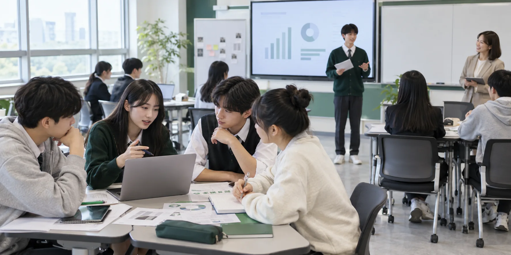
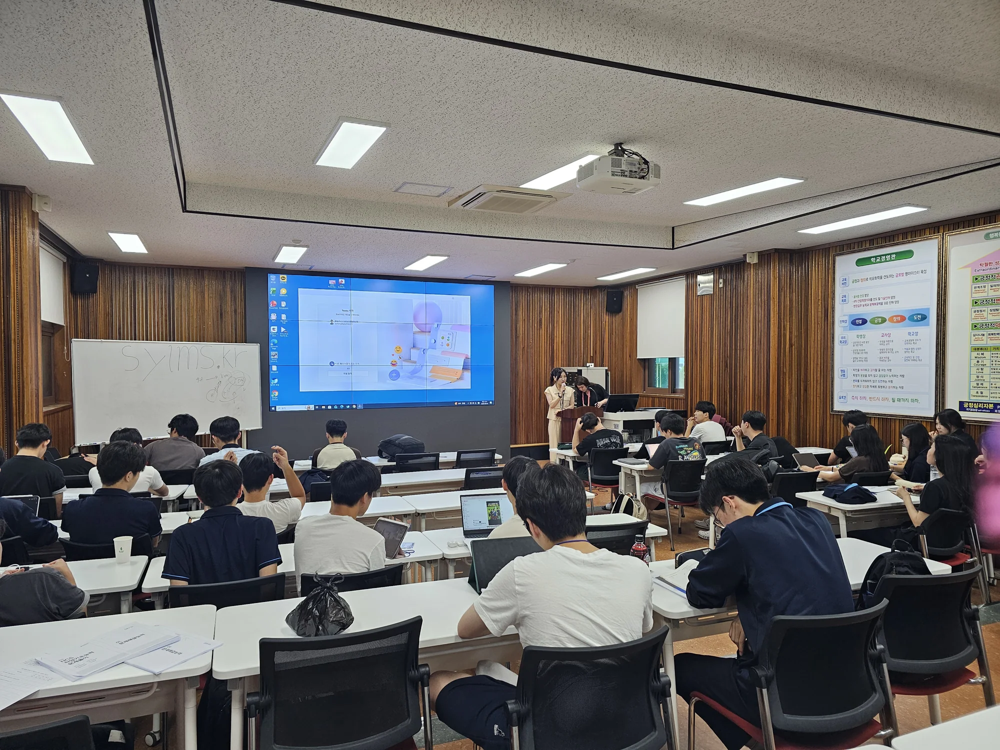
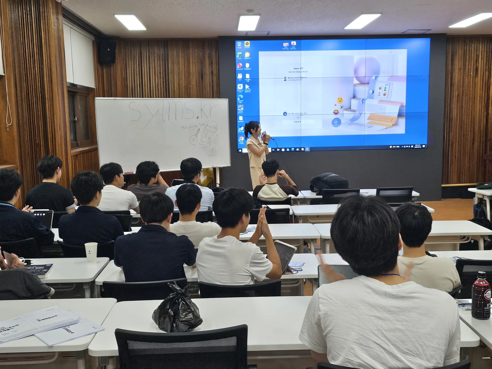

고급과정 출강 · AI 활용 업무혁신 실습
AI WORK INNOVATION × CAREER DESIGN
AI 시대 업무 혁신,
일과 조직문화로 확장합니다
공공기관의 보고서·민원 업무 혁신부터 직업계고 학생의 직무탐색·NCS·면접까지. 설명으로 끝나지 않고 참여자가 직접 결과물을 완성하는 교육을 설계합니다.
중앙부처·지자체 공무원
공공기관·공기업 임직원
행정·기획 실무자직업계고·마이스터고 학생
이론 20% · 실습 80%현장에서 바로 쓰는 결과물 중심
120분공공행정 AI 대표 과정
5일 · 30시간진로·취업캠프 확장형
3대생성형 AI·진로취업·콘텐츠 제작
7개교특성화고·마이스터고 교육 사례
EDUCATION REFERENCES
자료로 확인된
출강·교육 활동 기관
기관명과 활동 내용은 프로젝트의 강의계획안과 강사 프로필에 기재된 범위만 사용했습니다.
AI 활용 컨설턴트
CAREER & AI EDUCATION REFERENCES진로·취업 및 AI 역량강화 교육 사례
8개 기관EDUCATION OPERATION EXPERIENCE교육기관·직업체험관 운영 및 프로그램 기획 경험
LEARN · APPLY · VERIFY
도구를 배우는 교육에서
스스로 결과를 만드는 교육으로
업무와 진로가 달라도 변화가 일어나는 학습 구조는 같습니다.
맥락 진단
업무 자료와 개인의 강점,
목표를 정확하게 파악
결과물 실습
보고서·직무분석·발표 등
눈에 보이는 산출물을 제작
검증과 피드백
팩트체크·코칭·모의실전으로
결과를 점검하고 개선
WHY THIS PROGRAM
일반론적인 AI 강의로는
공공기관의 실제 업무를 해결할 수 없습니다
실무자가 매일 마주하는 세 가지 문제에서 교육을 시작합니다.
보고서 초안의 막막함
방대한 정책 자료 속에서 핵심과 초안의 방향을 찾는 데 많은 시간이 듭니다.
AI 결과물에 대한 불안
그럴듯한 오류 때문에 출처, 수치, 고유명사를 그대로 신뢰하기 어렵습니다.
실무와 동떨어진 예시
일반적인 예시는 기관의 문서 양식과 보고 체계에 바로 적용하기 어렵습니다.
HOW I TEACH
생성보다 중요한 것은
정확한 정리와 검증입니다
자료 입력부터 최종 행정 문체까지, 하나의 업무 흐름으로 연결합니다.
- STEP 01
데이터 구조화
복잡한 정책·행정 자료를 AI가 정확히 이해하도록 맥락과 입력 데이터를 정리합니다.
- STEP 02
초안 프레임워크
추진 배경, 현황, 문제점, 세부 계획에 맞춘 논리적 뼈대를 빠르게 도출합니다.
- STEP 03
팩트체크
출처, 수치, 고유명사를 교차 확인해 공공 기준에 맞는 신뢰성을 확보합니다.
- STEP 04
실무형 리라이팅
행정 어조와 개조식 문체로 정제해 바로 검토 가능한 산출물로 완성합니다.
FIELD CASE · BEFORE & AFTER
AI 활용 업무혁신
실무 보고서 자동화 실습
정책 기초자료를 구조화해 신규 기획 보고서의 논리와 근거를 완성하는 참여형 실습입니다.
맞춤 교육 문의하기초안의 방향과 근거가 막히는 업무
자료는 많지만 초안의 방향과 근거를 잡는 데 긴 시간이 소요됩니다.
자료 구조화부터 팩트체크까지
자료 구조화 → 행정 양식 초안 → 환각 방지와 팩트체크 순서로 실습합니다.
검토 가능한 실무 보고서 뼈대
참여자가 자신의 업무 자료로 검토 가능한 보고서 뼈대를 직접 완성합니다.
INPUT
정책 기초자료
PROMPT
자료 구조화 → 행정 양식 초안 → 팩트체크
OUTPUT
검토용 보고서 뼈대
01추진 배경 · 목적
02주요 내용 · 근거
03기대 효과 · 향후 계획
EDUCATION TRACKS
기관과 참여자의 업무에 맞춰
교육의 출발점을 선택합니다
01
PRIMARY PROGRAM생성형 AI 업무혁신
30%+초안 시간 단축 목표생성형 AI 업무혁신
& 업무 자동화
기안문·요약 보고서·보도자료·민원 답변을 실제 사례로 다루고, 모바일 ChatGPT·Gemini 실습으로 업무 프롬프트를 완성합니다.
- 대표 120분
- 25명 내외
- 중급 실무자
02
SPECIALIZED PROGRAM생성형 AI 실전 활용
MAKE기획에서 완성까지생성형 AI 실전 활용
& 콘텐츠 제작
AI 이미지, 영상, 작곡, 숏폼 콘텐츠의 기획부터 제작까지 실습합니다. 도구 사용법을 넘어 메시지 기획과 결과물 개선 과정을 함께 다룹니다.
- AI 이미지·영상
- Suno
- 콘텐츠 기획
03
CAREER PROGRAMAI 진로탐색
GROW도구와 코칭의 연결AI 진로탐색
& 취업 역량 강화
AI 기반 직업·진로 탐색, 이력서와 자기소개서 개선, 모의면접 피드백을 연결합니다. 코칭심리 기반 질문으로 참여자가 자신의 강점을 언어화하도록 돕습니다.
- 기업·직무분석
- NCS
- PT·토론면접
HALF-DAY WORKSHOP · CURRICULUM
120분 공공기관 맞춤형
AI 업무혁신 워크숍
강의 주제, 핵심 실습, 결과물만 빠르게 확인할 수 있도록 4단계로 정리했습니다.
-
01OPENING 10M · PART 1 20M
AI와 공공행정
도구의 이해- 강의 주제
- 생성형 AI 최신 트렌드와 강점·한계, ChatGPT·Gemini 비교
- 핵심 실습
- 공공업무 사례와 실시간 시연으로 적합한 도구 비교
- 결과물
- 120분 학습 로드맵 · 도구 선택 기준
-
02PART 2 · 20M
프롬프트
설계 공식- 강의 주제
- 역할·목표·맥락·조건·출력 형식의 프롬프트 5요소
- 핵심 실습
- 모호한 지시를 구체적인 행정 지시어로 변환
- 결과물
- 업무에 재사용할 수 있는 프롬프트 구조
10M · 중간 휴식 및 참여 실습 환경 점검
-
03PART 3 · 30M
공공 업무
자동화 실습- 강의 주제
- 정책 보고서·보도자료·회의자료·민원 답변과 AI Studio
- 핵심 실습
- 보고서 구조화, 핵심 요약, 공감형 민원 문장 개선
- 결과물
- 검토 가능한 업무 초안
-
04PART 4 15M · CLOSING 15M
안전·검증과
실무 적용- 강의 주제
- 개인정보 보호, 법령·통계·저작권·출처 검증과 질의응답
- 핵심 실습
- 내 업무를 선정해 안전수칙과 팩트체크 기준 적용
- 결과물
- 안전 체크리스트 · 나만의 전용 프롬프트 1종
NEXT STEP
우리 기관의 업무에 맞게 커리큘럼을 조정할 수 있습니다
교육 대상과 실습 환경을 알려주시면 맞춤 구성을 함께 검토합니다.
CAREER CAMP · 5 DAY JOURNEY
진로 탐색에서
면접 실행까지
직업계고·마이스터고 학생이 자신의 강점을 이해하고 기업과 직무를 분석한 뒤, NCS와 면접 실전까지 준비하는 5일 집중 과정입니다.

DAY 01탐색의 문을 열다
게이미케이션 + AI 기업·직무분석
협업 게임으로 문제해결을 경험하고, 생성형 AI로 기업·직무 로드맵과 인포그래픽을 제작합니다. Gems와 Suno로 취업 준비 도구와 진로 이야기를 완성합니다.
- 협업 게임
- 기업·직무분석
- Gems·Suno
DAY 02기초를 다지다
NCS 직업기초능력 집중 특강
능력중심 채용 전형을 이해하고 수리능력, 의사소통능력, 문제해결능력, 자원관리능력의 핵심 유형과 풀이 전략을 익힙니다.
- 응용수리·자료해석
- 문서작성·독해
- 문제·자원관리
DAY 03현재를 진단하다
NCS 실전 모의고사 + 해설
실전 모의고사를 통해 자신의 강점과 취약 영역을 확인하고, 문항별 해설과 학습 전략으로 개인별 보완 방향을 구체화합니다.
- 실전 모의고사
- 취약점 분석
- 개인 학습전략
DAY 04말로 증명하다
PT면접 + 토론면접 실전
PT면접의 논리 전개와 보이스를 훈련하고, 1분 자기소개·PT·토론 실습 후 즉시 피드백을 받습니다.
- PT 롤플레잉
- 토론 실습
- 1:1 피드백
DAY 05첫인상을 완성하다
면접 이미지메이킹 + 최종 리허설
퍼스널컬러, 면접 메이크업·복장·헤어 전략을 익혀 신뢰감 있는 첫인상과 실전 대응력을 완성합니다.
- 퍼스널컬러
- 복장·헤어
- 실전 면접대비
CUSTOM PROGRAM DB
학교의 목표에 맞춰
필요한 모듈만 조합합니다
단기 특강부터 캠프, 상주상담까지 참여자와 운영 환경에 맞춰 설계할 수 있습니다.
진로·강점 탐색
전공별 취업특강, 강점검사, MBTI·프레디저, 진로 로드맵
기업·직무 이해
기업분석, 직무분석, 정보 탐색, 기업탐방과 현직자 대화
AI 입사지원서
DeepResume GPT, 경험 근거 발굴, 이력서·자기소개서 코칭
면접 실전
모의면접, PT·토론면접, AI 면접, 이미지메이킹과 피드백
직업기초역량
NCS·인적성, 직장예절, 이메일·메신저, 공감 대화법
상담·팀 프로젝트
1:1 상주상담, 팀빌딩, 리더십, 취업로드맵 경진대회
INSTRUCTOR PROFILE
박정숙
공공 AI 업무혁신 · 진로·취업교육 전문 강사
박정숙 강사는 생성형 AI 최신 기술과 코칭심리학을 결합해 실무자가 자신의 업무에 AI를 적용하고 스스로 결과물을 완성하도록 돕습니다.
전문 분야
생성형 AI 실무 활용AI 콘텐츠 제작AI 진로·취업 컨설팅사업계획·성과보고서
주요 경력
EDUCATION CAREER교육 경력 20년
LECTURE CAREER출강 경력 5년
CURRENT한영대학교 대학일자리플러스센터
AI 활용 컨설턴트
AI 활용 컨설턴트
EDUCATION광신대학교 상담치료대학원
코칭심리학 석사과정
코칭심리학 석사과정
기술을 알려주는 데서 멈추지 않고, 사람과 업무의 변화를 설계합니다.
주요 자격
AI 융합 코딩지도자 1급 · AI 활용 전문가 · AI 게임 개발 전문 강사 · KAC 코칭심리 · 정보처리기사 · 평생교육사 · 직업상담사 · 채용면접관
TRACK RECORD · LIVE CLASSROOM
현장에서 배우고,
직접 실습합니다
강의와 시연, 참여자의 도구 활용이 한 공간에서 이어지는 실제 교육 현장입니다.


PROCESS
기관 환경에 맞춘
투명한 진행 절차
01
메일 상담
일정, 대상, 인원과 실습 환경을 확인합니다.
02
커리큘럼 조율
주력 업무에 맞게 강의와 교안을 구성합니다.
03
현장 실습
이론 20%, 실습 80%로 결과물을 만듭니다.
04
사후 자료
프롬프트 템플릿과 피드백을 제공합니다.
FAQ
교육 담당자가
자주 묻는 질문
내부 PC 실습 환경이 제한적이어도 가능한가요?
가능합니다. 외부망 접속과 사용 가능한 AI 도구를 사전에 점검하고, 해당 환경에서 작동하는 실습 방식으로 조정합니다.
생성형 AI를 처음 쓰는 직원도 따라갈 수 있나요?
자료 정리, 초안, 팩트체크 순서로 단계별 실습하기 때문에 초보자도 자신의 업무 주제로 결과물을 만들 수 있습니다.
보안 규정과 민감 정보 유출 방지도 다루나요?
비식별화 원칙과 데이터 입력 시 주의사항을 교육 초반 필수 내용으로 다룹니다.
120분 안에 실제 업무 결과물을 만들 수 있나요?
템플릿 기반 실습에 집중해 준비한 주제의 초안과 검증 기준을 직접 완성하도록 설계합니다.
진로·취업 프로그램은 5일 과정으로만 운영하나요?
아닙니다. 학교의 목표와 시간에 맞춰 기업·직무분석, NCS, 입사지원서, PT·토론면접, 이미지메이킹, 상주상담 중 필요한 모듈만 조합할 수 있습니다.
LET'S WORK TOGETHER
우리 기관에도 적용할 수 있는
맞춤 교육을 함께 설계합니다
교육 대상과 목표, 일정과 실습 환경을 알려주세요. 확인된 연락처로 맞춤 교육 구성을 안내해드립니다.
EMAILpssharon@hanmail.net↗ 공무원용 강의계획안 받기 ↓